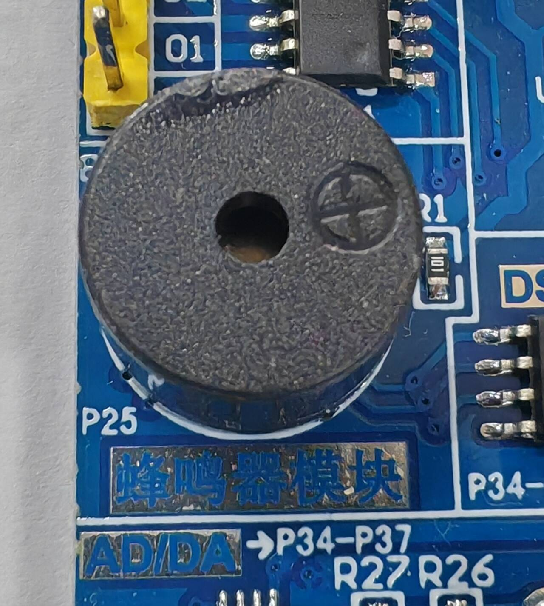
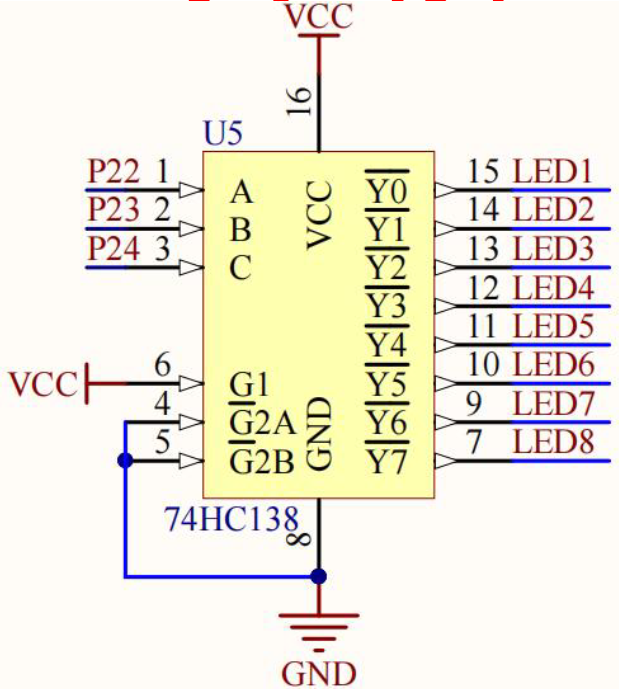

程序实验2~4.蜂鸣器-静态数码管-动态数码管
蜂鸣器实验
蜂鸣器介绍
蜂鸣器是一种一体化结构的电子讯响器，采用直流电压供电，广泛应用于电子产品中作为发声器件。
蜂鸣器主要分为压电式蜂鸣器和电磁式蜂鸣器两种类型。

与LED相比，由于51单片机的I/O口的驱动电流不足，蜂鸣器无法直接使用其来驱动，而是通过放大电路实现驱动。
我们通过周期性地改变电流的大小和方向，使振动膜片产生稳定的振动，进而使蜂鸣器发声，因此蜂鸣器的控制需要脉冲信号而不是单一信号，且脉冲信号频率一般要求在1.5-5KHz。

实验2 蜂鸣器
1
2
3
4
5
6
7
8
9
10
11
12
13
14
15
16
17
18
19
20
21
22
23
24
25
26
|
#include "reg52.h"
typedef unsigned char u8;
typedef unsigned int u16;
sbit BEEP = P2^5; //定义蜂鸣器控制管脚为BEEP，博主使用的单片机对应管脚为P2.5
void delay_10us(u16 time) //延时函数延用实验1程序
{
while(time --);
}
void main()
{
u16 i = 2000; //控制蜂鸣器发声时间的变量
while(1)
{
while(i--)
{
BEEP = !BEEP; //使蜂鸣器控制管脚输出在高电平和低电平之间切换
delay_10us(100); //控制输出信号脉冲周期2*100*10微秒
}
i = 0;
BEEP = 0;
}
}
|
蜂鸣器的音高取决于脉冲信号的周期（频率），周期越短（频率越高）音高越高。
蜂鸣器的音量取决于脉冲信号中高电平的占空比（即高电平输出时间在一个周期的占比），占空比越大音量越大。
以下是一个便于控制蜂鸣器的音量的内部循环。
1
2
3
4
5
6
7
|
while(i--)
{
BEEP = 0;
delay_10us(150); //低电平输出时间占75%
BEEP = 1;
delay_10us(50); //高电平输出时间占25%，相较于上一个程序蜂鸣器音量更小
}
|
静态数码管实验
数码管介绍
数码管简介
共阳数码管是指将所有发光二极管的阳极接到一起形成公共阳极（COM）的数码管，共阳数码管在应用时应将公共极COM接到+5V，控制阴极低电平为亮，高电平为暗。

共阴数码管是指将所有发光二极管的阴极接到一起形成公共阴极（COM）的数码管，共阴数码管在应用时应将公共极COM接到地线GND，控制阳极高电平为亮，低电平为暗。

同时，数码管也根据显示数字位数的不同分类，博主使用的单片机数码管为两块四位共阴数码管。

数码管显示编码介绍

数码管上的每个笔画与发光二极管为相同字母一一对应的关系，发光二极管a到DP对应P0.0到P0.7八位。
对数字进行编码时，先确定显示的笔画和与之对应的发光二极管，比如数字0显示的笔画为abcdef；再根据数码管是共阴还是共阳确定每一位的电平写成二进制数，以共阴为例，数字0的二进制编码为00111111，共阳取反即可；最后到程序中转化为十六进制表示，数字0的十六进制编码即为0x3f。
数码管静态显示原理
数码管的控制分为段选和位选：段选即选择发光二极管a到DP这些段，上文0x3f也被称为段码值；位选通过三八译码器利用三个管脚的输入控制八个共阴（阳）数码管的阴（阳）极，即用三位二进制来选择显示八个数位中的哪一个。
静态显示的特点是每个数码管的段选必须接一个八位数据线来保持显示的字形码，即每个数码管都需要八个I/O口，当送入一次字形码后，显示字形可一直保持到送入新字形码为止。优点是CPU占用少，显示亮度亮；缺点是硬件电路复杂，成本较高。
博主使用的单片机数码管为动态数码管，但由于下拉电阻作用，控制位选的管脚P22到P24默认输出高电平，对应数码管0到7中的第7位，因此可以在不进行位选时将该数码管当做静态数码管使用，关于位选将在动态数码管中进一步讲到。
实验3 静态数码管
实现功能：控制静态数码管显示数字0，即让P0端口输出数字0的段码0x3f（共阴）。
1
2
3
4
5
6
7
8
9
10
11
12
13
|
#include "reg52.h"
typedef unsigned char u8;
typedef unsigned int u16;
#define SEG_A_DP_PORT P0 //宏定义P0端口，SEG为数码管LED Segment Displays简写，A_DP为A到DP段，PORT为端口
u8 gseg_code[16] = {0x3f, 0x06, 0x5b, 0x4f, 0x66, 0x6d, 0x7d, 0x07, 0x7f, 0x6f, 0x77, 0x7c, 0x39, 0x5e, 0x79, 0x71}; //用一个数组存储十六进制0到F的段码值，便于调用
void main()
{
SEG_A_DP_PORT = gseg_code[0]; //P0端口输出0的段码值
}
|
效果图

由于是动态数码管，其显示会在0和8.之间频闪，但视觉上0更明显。
动态数码管实验
数码管介绍
数码管动态显示原理
动态显示是利用减少段选线，分开位选线，利用位选线不同时刻选择通断，改变段选数据来实现的。
动态数码管通过高频闪烁利用人眼的视觉暂留效应造成静态显示的效果。
74HC245芯片介绍
段选电路部分和74HC245芯片

74HC245芯片是一种三态输出八路双向收发器，主要应用于一些大屏显示和其他消费类电子产品中作为驱动芯片使用。
在51单片机中，数码管无法直接由管脚驱动，需要使用该驱动芯片。
74HC138芯片介绍
位选电路部分和74HC138芯片

74HC138芯片是一种三通道输入八通道输出译码器，也称为三八译码器，主要应用于消费类电子产品。

上图为将芯片输入与输出对应起来的真值表，本实验中只涉及红框内部分，可知该芯片将三位二进制输入转化为0到7的值并选择对应序号的管脚输出。
实验4 动态数码管
实现功能：控制八位动态数码管从左到右显示01234567。
1
2
3
4
5
6
7
8
9
10
11
12
13
14
15
16
17
18
19
20
21
22
23
24
25
26
27
28
29
30
31
32
33
34
35
36
37
38
39
40
41
42
43
44
45
46
47
48
|
#include "reg52.h"
typedef unsigned char u8;
typedef unsigned int u16;
#define SEG_A_DP_PORT P0
sbit LSA = P2^2;
sbit LSB = P2^3;
sbit LSC = P2^4; //定义位选管脚
u8 gseg_code[16] = {0x3f, 0x06, 0x5b, 0x4f, 0x66, 0x6d, 0x7d, 0x07, 0x7f, 0x6f, 0x77, 0x7c, 0x39, 0x5e, 0x79, 0x71};
void delay_10us(u16 time) //延时函数
{
while(time --);
}
void seg_display(void) //动态数码管显示函数
{
u8 i = 0; //循环控制变量
for(i = 0;i < 8;i++) //八位数码管依次显示
{
switch(i) //将i转化为三个位选管脚的二进制输出
{
case 0: LSC = 1;LSB = 1;LSA = 1;break;
case 1: LSC = 1;LSB = 1;LSA = 0;break;
case 2: LSC = 1;LSB = 0;LSA = 1;break;
case 3: LSC = 1;LSB = 0;LSA = 0;break;
case 4: LSC = 0;LSB = 1;LSA = 1;break;
case 5: LSC = 0;LSB = 1;LSA = 0;break;
case 6: LSC = 0;LSB = 0;LSA = 1;break;
case 7: LSC = 0;LSB = 0;LSA = 0;break;
//本程序为阴极数码管，阳极需要取反
}
SEG_A_DP_PORT = gseg_code[i]; //显示对应的数字
delay_10us(100);
SEG_A_DP_PORT = 0x00; //消影
}
}
void main()
{
while(1)
{
seg_display();
}
}
|
因为数码管数位和要显示的数字的排列顺序不一样，从左到右是7到0位，但要输出0到7，有两种方法：
一种是该程序，在switch函数中注意i与位选输出信号的对应关系，0到7分别对应二进制的7到0；
另一种是不调换i与位选输出信号的对应关系，将i的循环迭代顺序反过来，同时调整第i位显示的数字为7-i。
下面是第二种方法的动态数码管显示函数：
1
2
3
4
5
6
7
8
9
10
11
12
13
14
15
16
17
18
19
20
21
|
void seg_display(void)
{
u8 i = 0;
for(i = 7;i >= 0;i--)
{
switch(i)
{
case 0: LSC = 0;LSB = 0;LSA = 0;break;
case 1: LSC = 0;LSB = 0;LSA = 1;break;
case 2: LSC = 0;LSB = 1;LSA = 0;break;
case 3: LSC = 0;LSB = 1;LSA = 1;break;
case 4: LSC = 1;LSB = 0;LSA = 0;break;
case 5: LSC = 1;LSB = 0;LSA = 1;break;
case 6: LSC = 1;LSB = 1;LSA = 0;break;
case 7: LSC = 1;LSB = 1;LSA = 1;break;
}
SEG_A_DP_PORT = gseg_code[7-i];
delay_10us(100);
SEG_A_DP_PORT = 0x00;
}
}
|
在程序中还有一个消影的操作。如果没有该操作，会发现后一个数字有前一个数字微弱的重影。这是因为动态数码管所有数位的段选线路是并在一起的，数码管在切换位选到切换段选的程序执行期间有一个极小的间隔，在切换位选后下一个数位会短暂地继承上一个数位的段码，因此在切换位选前将当前数位的显示擦除，擦除的空隙很短所以不会被人眼察觉到，而这也是动态数码管显示亮度低于静态数码管的原因。
效果图

本篇完